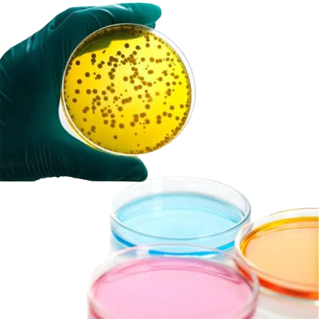
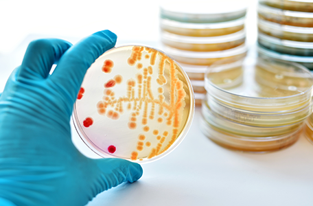
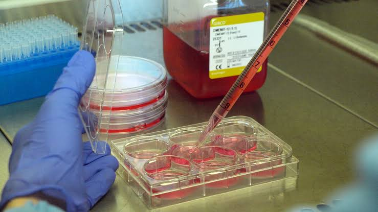
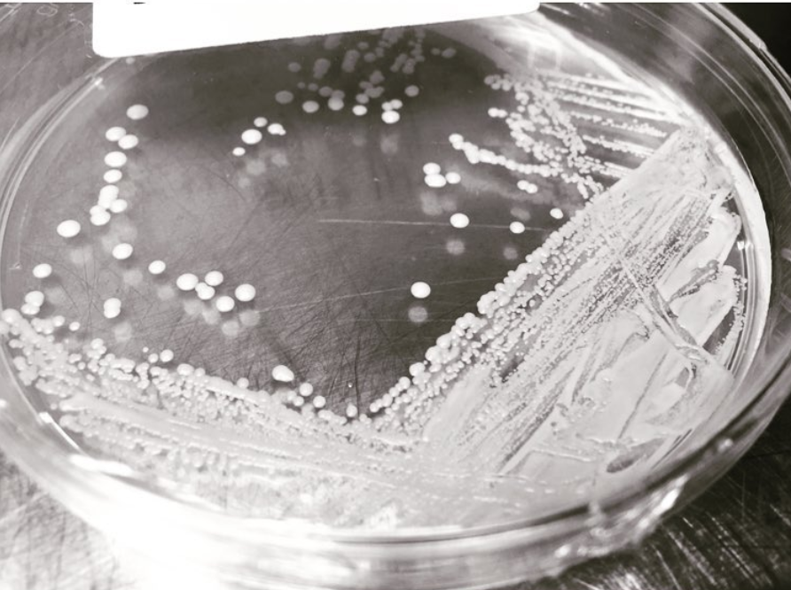
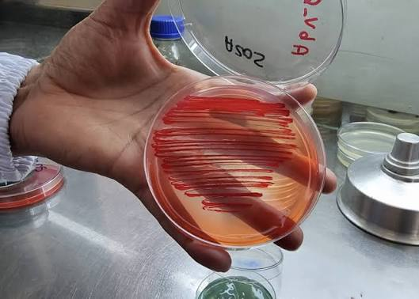
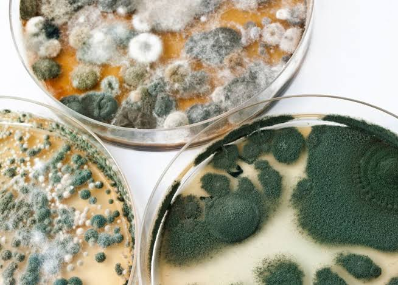
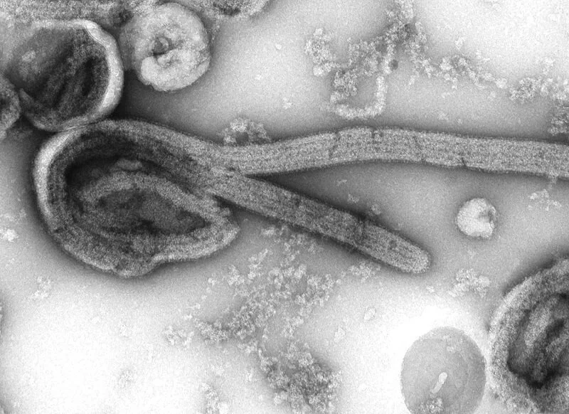
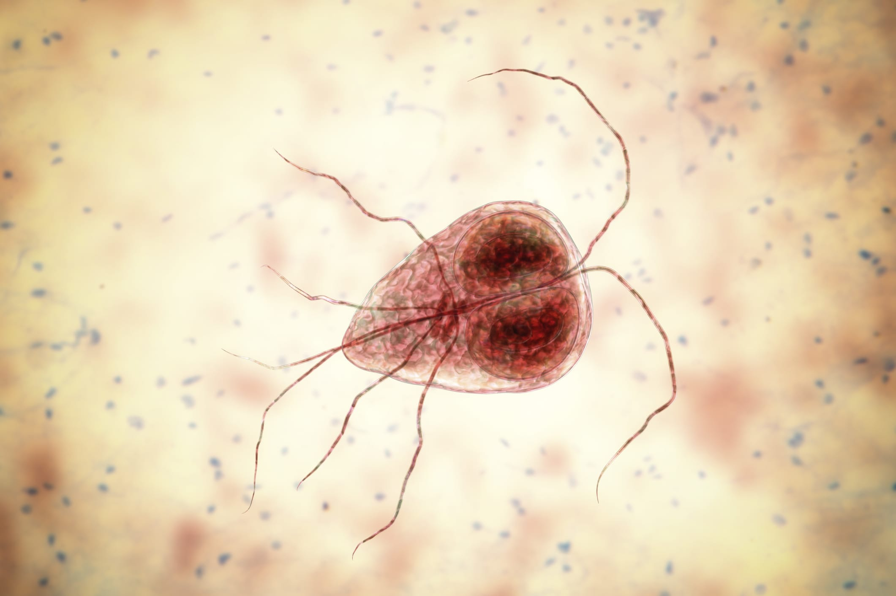
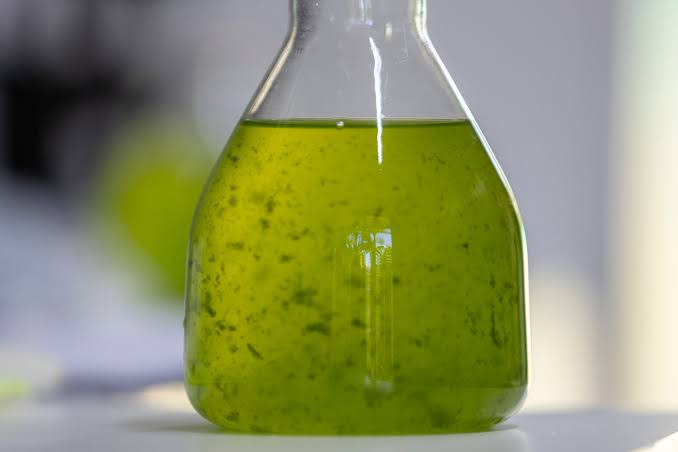
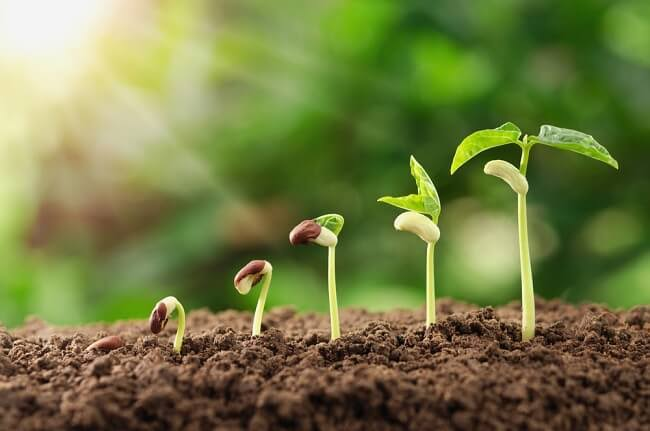

¿Qué es un Medio de Cultivo?
Mezcla de nutrientes en solución necesarios para el crecimiento de microorganismos, células, tejidos vegetales o plantas.
En esta página podrás acceder a información acerca de diversos medios de cultivo del campo de la Microbiología de forma fácil y digerible.

¿No sabes donde empezar? Comienza con alguno de estos posts:

Mezcla de nutrientes en solución necesarios para el crecimiento de microorganismos, células, tejidos vegetales o plantas.

El Cultivo Celular consta de mantener y multiplicar células vivas fuera de un organismo vivo en medio controlado, por otro lado, la Línea Celular consta una sucesión de cultivos priimarios.

Clasificación de los cultivos según el número y tipo de especies de microorganismos y/u organismos que pueden albergar en ellas.
En está sección encontrarás información de medios de cultivo según su organismo.

Microorganismos procariotas de pequeño tamaño y diversas formas, considerados el organismo más abundante en la Tierra.

Grupo de organismos eucariotas, cuya principal característica es su pared de Quitina. Suelen encontrarse en casi todas partes.

Microorganismo de carácter infeccioso que consta de un segmento de Ácido Nucleico rodeado por una Cubierta Proteica sin capacidad de autoreplicación.

Microorganismos eucariotas que poseen una sola célula y se consideran como el organismo más simple del reino animal. Suelen ser estar en el ambiente aunque también suelen ser parásitos del Ser Humano.

Microorganismos unicelulares con capacidad de realizar Fotosíntesis, por ello, son capaces de formar Biomasa Orgánica a partir de CO₂ y Agua. La mayoría son usados con fines industriales como en la producción de Alginato o Espesantes alimentarios.

Todo aquel organismo con célula vegetal con paredes compuestas de Celulosa, en su mayoría, fotosintéticos y sin desplazamiento o capacidad locomotora.